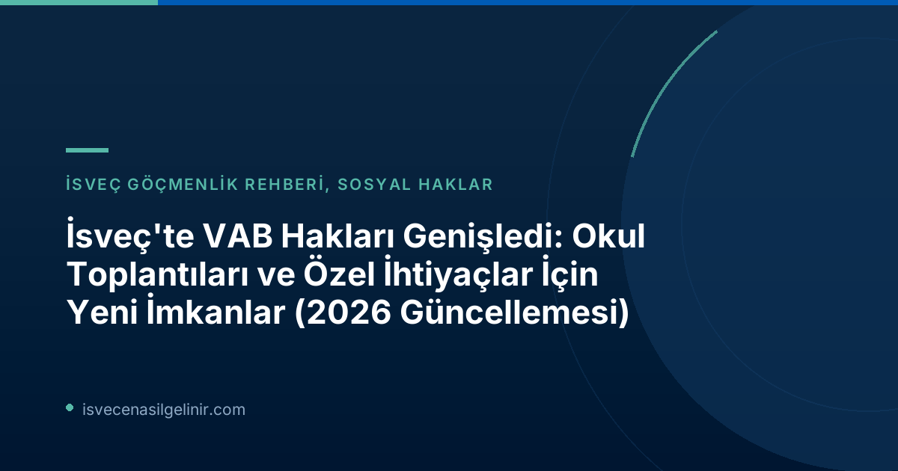

Yeni VAB Düzenlemeleri Ne Zaman Yürürlüğe Girdi?
İsveç'te çocuklu ailelerin hayatını kolaylaştırmayı hedefleyen yeni VAB (Vård av sjukt barn) düzenlemeleri, 1 Ocak 2026 tarihinden itibaren resmen yürürlüğe girdi. Bu tarihten itibaren ebeveynler, çocuklarının hastalık, özel ihtiyaç veya sosyal hizmetlerle ilgili belirli durumlarında, daha esnek bir şekilde çocuk bakım parası (VAB) alma hakkına sahip oldular.
Hangi Yeni VAB Durumları Mevcut?
Försäkringskassan'ın açıklamasına göre, ebeveynlerin çocuk bakım parası (VAB) alabileceği üç yeni durum tanımlanmıştır:
Yeni VAB Durumları (1 Ocak 2026 İtibarıyla)
- Çocuğun Hastalığı veya Özel İhtiyacı Nedeniyle Okul/Anaokulu Toplantıları: Ebeveynin çocuğun hastalığı veya fonksiyonel bir engeli nedeniyle anaokulu veya okuldaki bir toplantıya katılması gerektiğinde.
- Sosyal Hizmetler Değerlendirmeleri ve Ön İncelemeler: Ebeveynin, sosyal hizmetler biriminde çocuğu hakkında yürütülen bir soruşturmaya veya ön değerlendirmeye katılması gerektiğinde.
- Okul Personeline Öz Bakım Eğitimi Verilmesi: Ebeveynin, çocuğun diyabet veya egzama gibi özel öz bakım (egenvård) ihtiyaçları konusunda anaokulu veya okul personeline eğitim vermesi gerektiğinde.
Bu yeni düzenlemeler, çocukların özel ihtiyaçlarına daha iyi destek sağlanmasını ve ebeveynlerin bu süreçlerde daha aktif rol alabilmesini amaçlamaktadır. İsveç'teki sosyal haklar ve göçmenlik süreci hakkında detaylı bilgi için sverigemedborgarskapsprov.com adresini ziyaret edebilirsiniz.
En Çok Kullanılan VAB Durumu Hangisi?
Försäkringskassan'ın ilk altı aylık takip raporuna göre (Ocak-Haziran 2026), yeni VAB imkanları arasında en çok kullanılan durum, ebeveynlerin çocuklarının anaokulu veya okuldaki toplantılara katılması olmuştur. Analizler, bu seçeneğin diğer yeni imkanlara göre daha fazla tercih edildiğini açıkça göstermektedir.
İstatistikler Ne Gösteriyor?
Yeni VAB düzenlemelerinin ilk altı aylık dönemdeki kullanımına ilişkin Försäkringskassan verileri oldukça ilgi çekicidir:
| Kullanım Durumu | Umutlu Benzersiz Kişi Sayısı |
|---|---|
| Anaokulu veya Okul Toplantıları (Çocuğun Hastalığı/Engeli Nedeniyle) | 1.580 |
| Sosyal Hizmetler Değerlendirmeleri veya Ön İncelemeler | 870 |
| Okul Personeline Öz Bakım Eğitimi Verilmesi | 120 |
| Toplam Yeni VAB Kullanımı | Yaklaşık 2.500 |
Bu verilere göre, yeni VAB imkanlarından ilk altı ayda yaklaşık 2.500 farklı kişi faydalanmıştır. Toplam VAB kullanımına kıyasla bu yeni durumlar hala küçük bir paya sahip olsa da, özellikle okul toplantıları için kullanımın öne çıktığı görülmektedir. Ayrıca, bu yeni imkanların daha çok okul çağındaki çocuklar (özellikle 11 yaşındakiler) için kullanıldığı belirtilmiştir ve çoğu ebeveynin günü tam olarak değil, yalnızca bir kısmını VAB olarak kullandığı raporlanmıştır.
Uzman Görüşü
Försäkringskassan analisti Alma Wennemo Lanninger, konuyla ilgili yaptığı açıklamada şunları belirtmiştir:
"En yaygın olanı, ebeveynlerin anaokulu veya okuldaki toplantılar için yeni imkanı kullanmış olmasıdır. Takip, ayrıca çoğu kişinin sadece günün bir kısmı için VAB aldığını ve yeni imkanların öncelikli olarak okul çağındaki çocuklar için kullanıldığını göstermektedir."
Bu açıklama, yeni düzenlemelerin özellikle eğitim kurumları ile işbirliği gerektiren durumlar için önemli bir boşluğu doldurduğunu ve ebeveynlere bu hassas süreçlerde daha fazla destek sağladığını vurgulamaktadır.
Sonuç
İsveç'teki VAB haklarının 2026 yılı itibarıyla genişletilmesi, çocuklu aileler için önemli bir adımdır. Özellikle çocuklarının sağlık durumları veya özel ihtiyaçları nedeniyle eğitim kurumları ve sosyal hizmetlerle etkileşimde bulunması gereken ebeveynlere büyük kolaylık sağlamaktadır. Bu yeni düzenlemeler, İsveç'in sosyal devlet anlayışının bir parçası olarak ebeveyn ve çocuk refahına verdiği önemi bir kez daha ortaya koymaktadır.
İsveç'e Göç Etmeyi mi Düşünüyorsunuz?
İsveç'e yönelik göçmenlik süreçleri, oturum izinleri, çalışma imkanları ve sosyal haklar hakkında kapsamlı bilgi edinmek için uzman danışmanlarımızla iletişime geçin. İsveç'teki yaşamınıza sorunsuz bir başlangıç yapın.